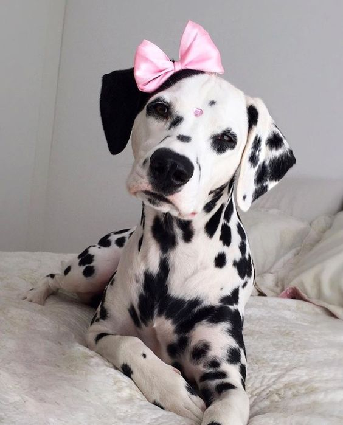

12 Reasons
You Should Get a
Dalmatian
1. You can get Dalmatians like Pongo & Perdita. They will love you forever. Just keep them and their babies safe from dognappers.
2. Dalmatians are pretty little babies. You can dress them up with bows so she can be the prettiest princess in town.
3. You can go swimming with your Dalmatian. Dalmatians love the water and love to swim. They think they are fish.
4. Look at that! Good thing your Dalmatian knows how to swim, because they also love boating! Your Dalmatian is the Captain of your ship.

5. Dalmatians could be fluffy. Dalmatians with fluffy ears are the cutest love bugs.
6. Dalmatians love having friends. Get your Dalmatian some friends!
7. Dalmatians are always good boys. Look at this good boy right here. He could do no wrong.
8. Dalmatians with heart eyes are real life walking emojis. Who would want anything else?
9. Your Dalmatian could serve. Get your Dalmatian some sunglasses for fashion.
10. This Dalmatian might be a movie star, i'm not sure. Get yourself a movie star Dalmatian.
11. Your Dalmatian could go on walks with you, which in turn helps you stay healthy! Be healthy and get a Dalmatian.
12. You could come home every single day to this happy good boy.